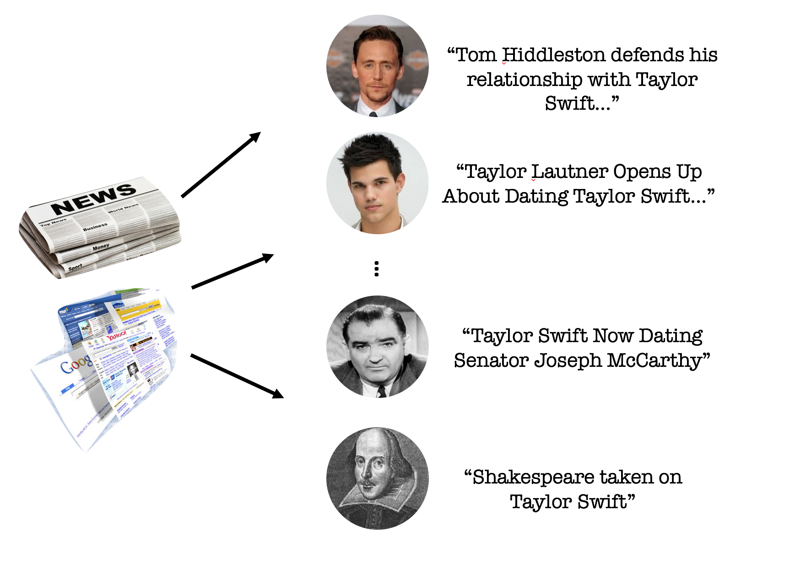
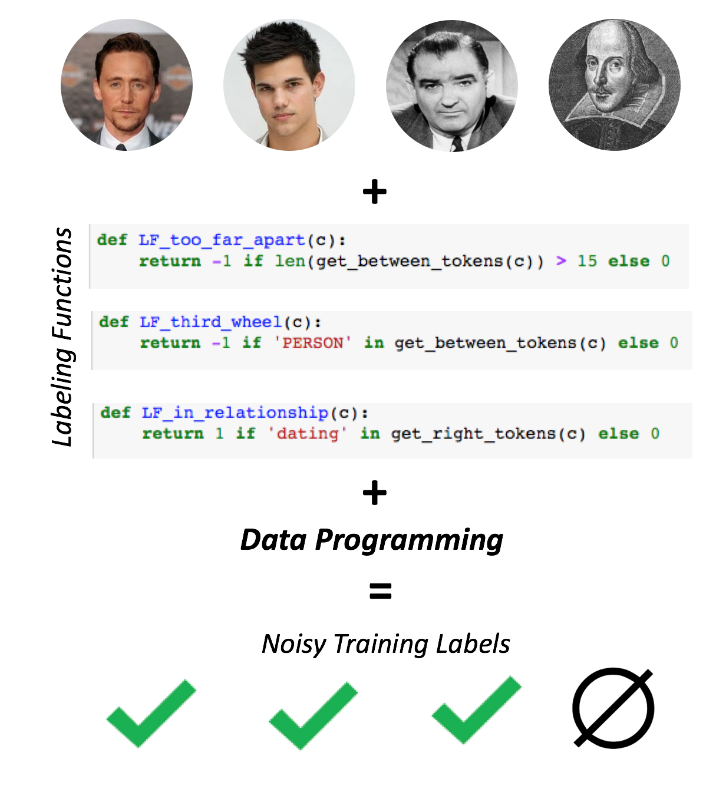
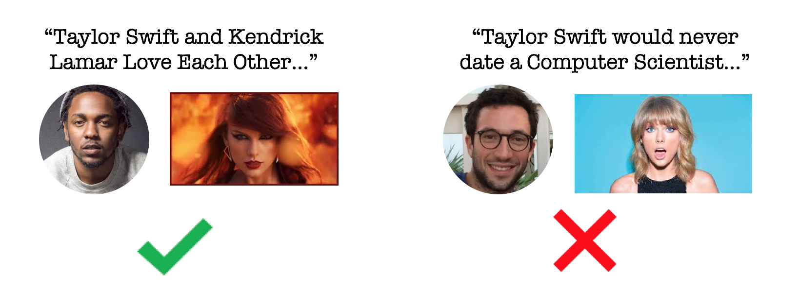
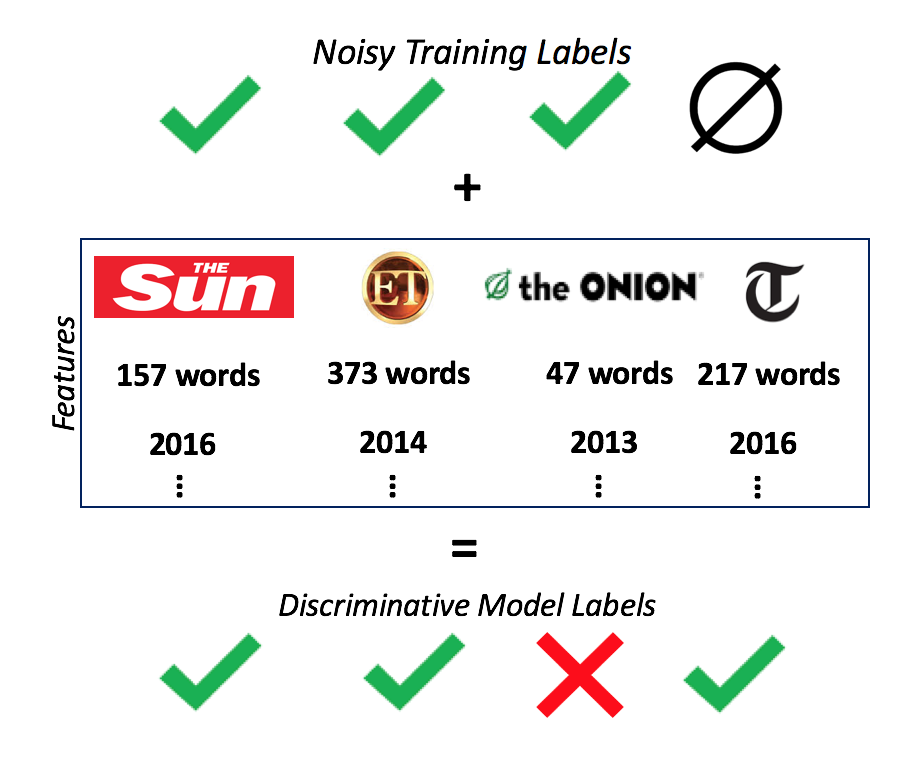
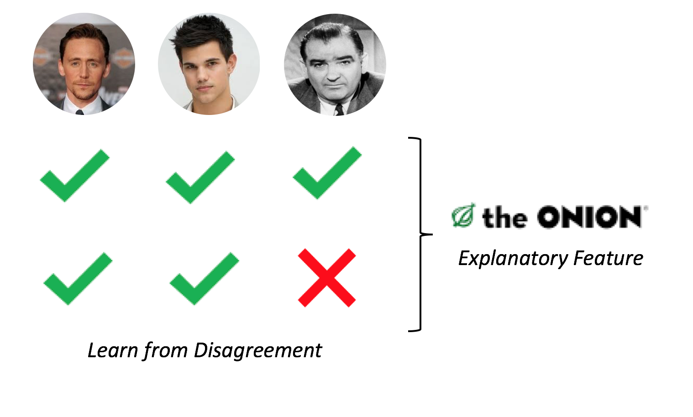
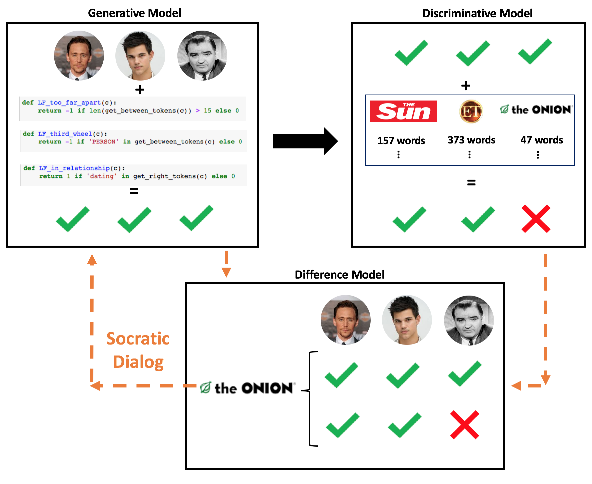

Socratic Learning:
Debugging Machine Learning Models
Post by Paroma Varma, Rose Yu, Dan Iter, Chris De Sa and Chris Ré
And referencing work by many other members of Hazy Research. Especially the research (and template) here.
Modern machine learning techniques like deep learning often require large amounts of training data, which are not readily available for all applications. Weak supervision attempts to alleviate this problem by using heuristics and “weak” classifiers to provide noisy training data. Previous work from the lab, data programming, encodes this weak supervision signal with user-defined labeling functions (as part of a generative model) to noisily label unlabeled data. With data programming and other weak supervision methodologies, these issues still remain:
The generative model may be misspecified, which can affect the performance of the discriminative training that follows.
The errors in the generative model do not provide users any intuition about why there were errors and how they can be fixed.
We describe our novel framework Socratic learning, a systematic process that improves the expressiveness of the generative model by using information from the discriminative model.
We will use a toy example to explore Socratic learning. We ran Socratic learning on real relation extraction datasets in other domains and reported results in the paper.
Imagine a relation extraction task that attempts to learn whether Taylor Swift has dated a particular person. In this scenario, a data point is any news article that includes the word "Taylor Swift" in the title. A natural language processing pipeline further analyzes the title to extract the entity that Taylor Swift is supposedly dating. For example, from an article titled "Tom Hiddleston defends his relationship with Taylor Swift as the real deal", the data point extracted would be "Tom Hiddleston". In this case, the ground truth label for this data point is True, since they did date at some point.

Following the data programming paradigm, we write the following simple labeling functions: (1) if there are too many words between “Taylor Swift” and the data point, we mark it as False. (2) If another person is mentioned between the name of the data point and the singer, the data point is marked False. (3) if the phrase “is dating” or “...relationship with” appears between the names in the same sentence, it’s marked as True. If none of the labeling functions apply, the data point receives no label at the generative model level. The process described in data programming learns some accuracy for each of these labeling functions and weights them accordingly to generate a set of imperfect training labels.

Domain experts often prefer generative models since they “tell a story” about the data. However, these models can be incomplete or incorrect in some cases.
We take a break from our case study to look at an underlying issue with generative models. These models are usually easier to write and interpret for domain experts. In the context of data programming, users can write labeling functions that encode domain knowledge to noisily label a certain portion of the unlabeled training data. However, some labeling functions might be too general.

Example of a labeling function that marks any data point with the word "love" or "like" as True and with "never" as False. It would work well for some data points and not others.
Others can work well for some subset of the data and not the other. Because of this, designing these generative models is an arduous and iterative process where experts spend much of their time considering the trade-offs between high accuracy and high coverage models. Moreover, it is not trivial to pick which function to tweak and how. Since a strong generative model is key to the subsequent learning task, debugging at this stage becomes the most time-consuming and challenging part of this process.
With our approach, we attempt to programatically debug the generative model without user intervention. This is certainly not a complete solution to the problem of misspecified models, but a step towards making generative models more expressive and interpretable.
Back to our example! Now we have a labeled training set and features for each data point such as word count, the newspaper/magazine it came from, presence of phrases like "dating", "love", "working with" etc. that may help determine whether the relation is indeed a romantic one or not. We can train any discriminative machine learning algorithm on this data to predict a new set of labels.

The discriminative model uses the noisily labeled training set from the generative model to learn a new model that relates the features associated with each article to the true label.
We find the generative model labels disagree with the labels from the discriminative model about 10% of the time — a sign that there is some underlying disagreement between the two models. Socratic learning finds the cause behind this disagreement by identifying a particular feature that best explains the discrepancy.

This feature turns out to be the one that fires if the article comes from "The Onion". As expected, there are various articles along the lines of "Taylor Swift is currently in a long-distance relationship with NASA’s Curiosity Rover" and "Taylor Swift Now Dating Senator Joseph McCarthy" that are published by "The Onion". These sarcasm-ridden articles were identified by the discriminative model as suggesting fake relationships, but the limited generative model was not able to make this distinction.
Socratic learning passes this newfound information to the generative model, which adjusts the accuracy of labeling function (3) (since that was causing false relationships to be marked true) so that it has a low accuracy when the article it is analyzing is from “The Onion” and a high accuracy when it is not. Including this feature in the generative model helps the it become stronger and more expressive. It also gives the users a chance to write specialized labeling functions for similar troll articles.
In many cases, the more powerful discriminative model has underlying information about the data that the generative model would benefit from knowing. We automatically recognize and use this knowledge to correct generative model misspecification.

Just like in the case study, there might be the opposite case where a user is tempted to throw out or rewrite labeling functions with low accuracies. However, these labeling functions might work very well for a subset of the data that the user is unaware of, even though it performs poorly on average. Recognizing these latent classes in the data that labeling function performances are related to can be essential to improving the generative model.
With Socratic learning, we attempt to automatically recognize these latent classes via a cooperative dialog between the discriminative and generative models. This dialog consists of certain important features from the discriminative model. By comparing the predictions from the two models, we can detect which features best explain the difference in predictions and map to latent classes. The advantage of identifying these features is twofold: first, they can be incorporated into the generative model to make it more expressive. Second, these features can provide users with interpretable feedback about how they can manually write more effective labeling functions.
Since our process is iterative, it is able to recognize multiple features that the generative model would benefit from knowing. Users are able to track how well the generative model does with the inclusion of these features and stop adding more features when the accuracy starts dropping on a held-out set. This ensures that the generative model does not overfit and adds a “human in the loop” aspect to the pipeline.
A few things we are currently working on:
We want to extend Socratic learning to multimodal data like text, images, time-series etc.
We hope to find other avenues where Socratic learning can make a difference, including deep learning and crowdsourcing.